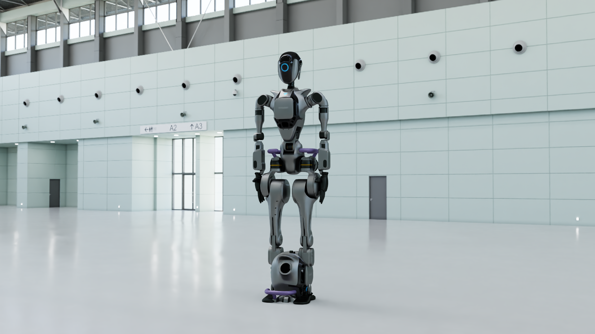

Sample
ovrtx + ovphysx Livestream Viewer
A PySide6 desktop viewer that renders USD with ovrtx and streams PhysX simulation poses from ovphysx in a separate process.

This sample combines two Omniverse libraries in one interactive desktop app: ovrtx for real-time rendering in the main process, and ovphysx for physics simulation in child worker processes. The viewer loads OVRTX-ready USD stages, renders offscreen, and displays the result in a Qt window.
Because ovrtx and ovphysx cannot reliably share the same process after USD loads (Carbonite plugin clashes),
PhysX workers run separately and stream pose data as JSON lines on stdout. The viewer applies those transforms
with map_attribute, then steps the renderer — the same update-then-render loop used in other ovrtx examples.
What's included
- USD viewer — PySide6 app with menus for ovrtx tutorials (clone, depth map) and ovphysx workflows (articulation, tensor binding, contact binding, clone)
-
Standalone tutorials — minimal ovrtx and ovphysx scripts under
ov-libaries-livestream/ - Live pose streaming — subprocess workers that emit version-1 JSON pose payloads the viewer applies each frame
- Sample USD stages — robot, depth sensor, articulation chain, and falling-box scenes tuned for the viewer
Prerequisites
- Python 3.10–3.13
- uv
- A GPU and environment suitable for running ovrtx
- Access to the NVIDIA Artifactory index for
ovrtx(see the samplepyproject.toml)
How to run
From the repository root, start the desktop viewer:
cd samples/ovrtx_ovphysx_livestream/livestream-files/examples/python/usd-viewer-example
uv run main.py
The default scene is the remote Robot-OVRTX URL. The first run may take noticeable time while shaders compile and cache.
Use File → Open… to load a local .usda file, or pass a path on the command line:
uv run main.py path/to/scene.usda
To try PhysX live streaming, open a local stage such as
../ov-libaries-livestream/links_chain_sample.usda, then use the
ovphysx menu items and press Play.
PhysX workers require a filesystem path — not an https:// URL.
Minimal PhysX-only smoke test (no viewer):
cd ../ov-libaries-livestream
uv run hello_world_physx.pyRepository path
Full source, USD assets, run instructions, and troubleshooting live in the sample folder:
Clone and run:
samples/ovrtx_ovphysx_livestream/
Viewer README:
…/usd-viewer-example/README.md